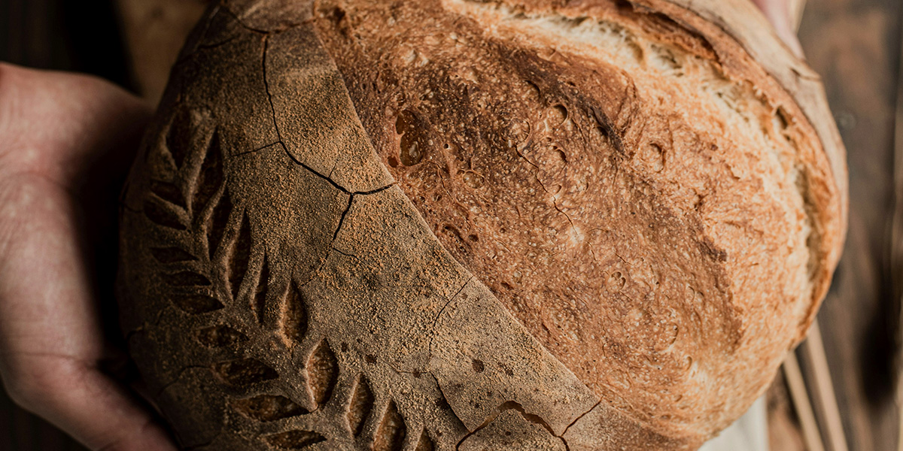
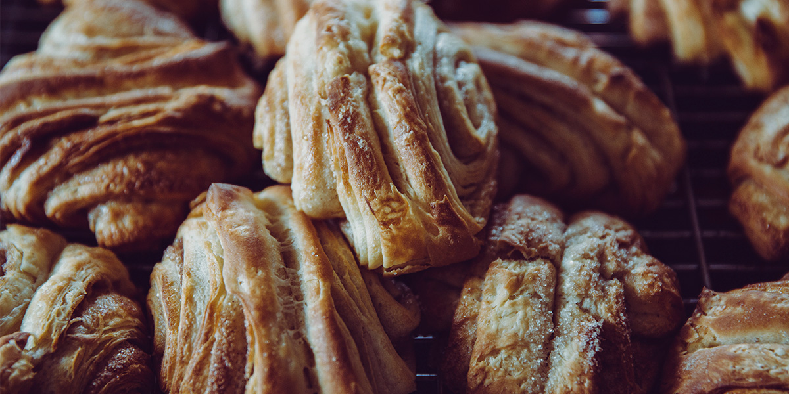

Menu
All items baked fresh daily. Availability may vary.
Artisan Breads

-
Roggenbrot (German Rye Bread)
Dense and flavorful traditional rye bread with a deep crust and slight tang from natural sourdough fermentation.
$8
-
Bauernbrot (Farmer’s Bread)
Rustic country loaf made from wheat and rye flour, with a crisp crust and airy interior.
$7.5
-
Vollkornbrot (Whole Grain Bread)
Hearty whole-grain loaf packed with seeds and slow-fermented for rich, nutty flavor.
$8.5
-
Sourdough Classic
Our naturally leavened wheat sourdough with a chewy crumb and caramelized crust.
$7
-
Laugenbrot (Pretzel Bread Loaf)
Soft wheat loaf with a thin, dark lye crust and subtle malt flavor, inspired by traditional German Laugengebäck.
$5
Sweet Pastries

-
Franzbroetchen (German Cinnamon Roll)
Soft, spiraled dough filled with cinnamon and brown sugar, lightly glazed.
$5
-
Apfelstrudel
Traditional flaky pastry filled with spiced apples, raisins, and almond crumble.
$6
-
Berliner (German Donut)
Pillowy yeast dough filled with raspberry jam and dusted with powdered sugar.
$4.5
-
Butter Croissant
Classic laminated pastry with crisp layers and rich European-style butter.
$4
-
Almond Croissant
Twice-baked croissant filled with almond cream and topped with toasted almonds.
$5.5
-
Seasonal Fruit Danish
Buttery pastry topped with locally sourced seasonal fruit and vanilla custard.
$5
Coffee and Drinks
-
Drip Coffee
Locally roasted single-origin coffee.
$3
-
Cappuccino
Espresso with steamed milk and light foam.
$4.5
-
Latte
Smooth espresso with steamed milk.
$5
-
Fresh Orange Juice
Cold-pressed daily.
$4
-
Seasonal Berry Smoothie
Blended with organic mixed berries, banana, Greek yogurt, and a touch of local honey. Fresh, lightly sweet, and perfectly balanced.
$6